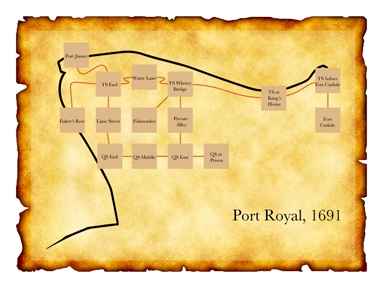

Port Royal 5
Producing an EPS map
Example 446
★"1691"
Fort James is a room.
Thames Street End is south of Fort James.
Lime Street is south of Thames Street End. West of Thames Street End is north of Fisher's Row. The description of Fisher's Row is "A waterfront street that runs south towards Chocolata Hole, where the small craft are harboured. It also continues north around the tip of the peninsula from here, turning into the east-west Thames Street."
Water Lane is east of Thames Street End.
East of Water Lane is a room called Thames Street at the Wherry Bridge. Thames Street at the Wherry Bridge has the description "To the southwest is the fishmarket; directly across the street is the entrance to a private alley through a brick archway."
The Fishmarket is southwest of Thames Street at the Wherry Bridge.
The Private Alley is south of Thames Street at the Wherry Bridge.
Thames Street by the King's House is east of Thames Street at the Wherry Bridge.
Thames Street before Fort Carlisle is east of Thames Street by the King's House.
South of Thames Street before Fort Carlisle is a room called Fort Carlisle. The description of Fort Carlisle is "Handsomely arrayed with cannons which you could fire at any moment -- though of course there are ships at dock which might be in the way."
Queen Street End is south of Lime Street.
Queen Street Middle is east of Queen Street End.
Queen Street East is east of Queen Street Middle and south of Private Alley.
Queen Street at the Prison is east of Queen Street East.
Index map with an EPS file and
Fisher's Row mapped southwest of Thames Street End,
room-size set to 50 and room-name-size set to 10,
room-name-length set to 15,
route-thickness set to 2,
room-outline set to off,
map-outline set to off,
route-colour set to "Chocolate",
room-colour set to "Burly Wood",
title set to "Port Royal, 1691",
font set to "Baskerville",
room-offset of Thames Street by the King's House set to 160&-40,
room-offset of Thames Street before Fort Carlisle set to 210&10,
room-offset of Fort Carlisle set to 210&0,
room-offset of Fort James set to -90&-20,
room-offset of Water Lane set to 0&20,
room-offset of Queen Street End set to 5&0.
This sentence has become a long catalogue of specifications. To break it down: we disambiguate the placement of Thames Street End, which otherwise is hard to locate because the directions to and from the room are not symmetrical. Then we apply some general rules about size, font, and color. Finally, we add instructions about offsetting the room locations of a few specific rooms.
This last part is a bit finicky and will not be necessary in many cases, but our goal this time is to create a map diagram that can be superimposed on the real coastal outline of Port Royal at the time. With a bit of editing, the result looks like this:
